地政学
英仏海峡に近い湾の岩山は、ノルマンディーとブルターニュの境界感覚、百年戦争の防衛記憶、国家的文化財管理を重ねます。小さな村でも、海岸防災、交通、観光統治、世界遺産保全は国際的な関心を受け続けています。
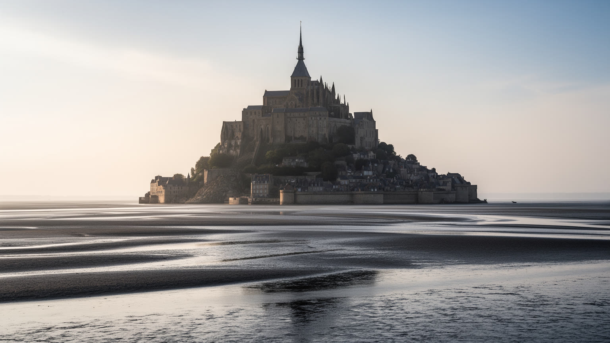
🇫🇷 フランス / ノルマンディー / World City Atlas
潮の満ち引き、岩山の修道院、巡礼の記憶、観光労働、干潟の生態、景観復元が、わずかな住民の村と世界的な来訪者の流れを同じ門前町に重ねます。
都市の骨格
モン・サン＝ミシェルは巨大都市ではありません。けれども、潮汐の地形、キリスト教巡礼、国家的な文化財管理、観光経済、沿岸環境の復元が凝縮する、世界でも特異な居住地です。
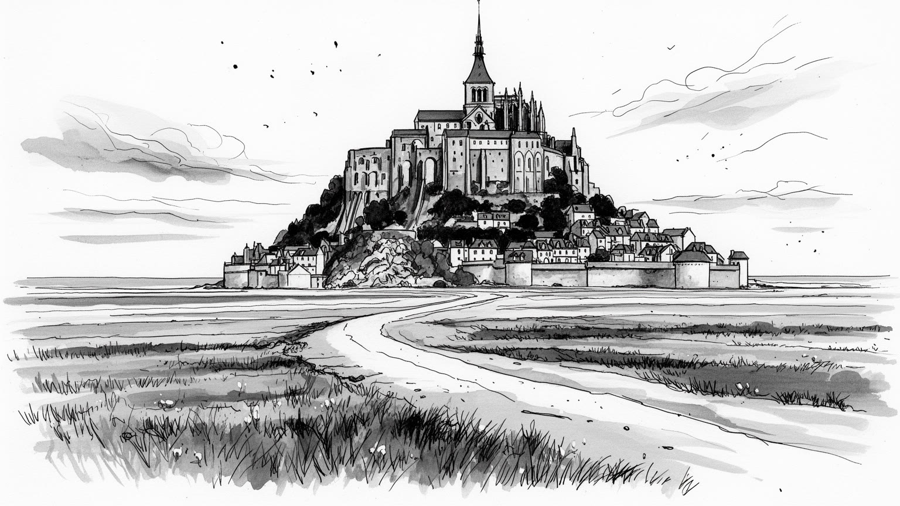
英仏海峡に近い湾の岩山は、ノルマンディーとブルターニュの境界感覚、百年戦争の防衛記憶、国家的文化財管理を重ねます。小さな村でも、海岸防災、交通、観光統治、世界遺産保全は国際的な関心を受け続けています。
経済は修道院公開、宿泊、飲食、土産物、ガイド、清掃、警備、シャトル、駐車場、羊の放牧、周辺農業に支えられます。住民は少ないが、繁忙期には多くの働き手が外から通い、観光の時間表で生活が日々大きく動きます。
大天使ミカエルへの信仰、ベネディクト会の記憶、現代の修道共同体、巡礼路、鐘の音、聖堂の沈黙が、土産物のにぎわいと隣り合います。宗教遺産は過去の装飾ではなく、祈りの時間を保つ空間です。鐘の音も場を整えます。
旅行者は潮位を気にしながら参道、城壁、修道院、湾歩きを楽しみます。住む人には搬入、清掃、郵便、ごみ、救急、夜の静けさ、観光客の密度が日常の負担になります。名所の裏側に小さな自治体の生活があります。夜も。
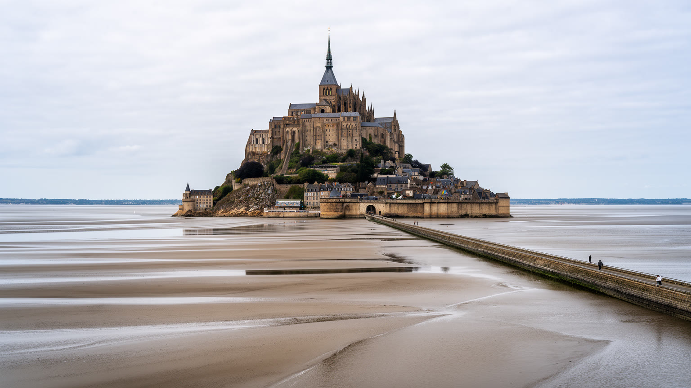
モン・サン＝ミシェルを都市として読む時、最初に見るべきものは建物ではなく潮です。湾は遠浅で、満潮と干潮の差が大きく、砂地、泥、浅い水路、霧、風向きが短い時間で景観を変えます。岩山はいつも同じ場所に立つが、近づける道、見える距離、危険の種類は潮位によって変わります。かつて巡礼者は干潮時の道を読み、案内人の知識に頼って渡りました。現代の観光客は橋やシャトルで安全に近づくが、湾歩きでは今も潮、流砂、天候への注意が欠かせません。潮汐は美しい背景ではなく、この場所の政治、信仰、観光、交通を決める基礎条件です。水が引けば広大な干潟が現れ、満ちれば岩山は島の性格を取り戻します。都市の境界が固定した道路や行政線ではなく、海のリズムで揺れることが、ここを特別にしています。海辺の町にありがちな港湾機能よりも、モン・サン＝ミシェルでは潮そのものが公共空間を作ります。写真の名所として消費されやすい景色の奥には、案内人の経験、救助体制、環境調査、堆砂との長い交渉があります。潮を読む力が、信仰の道を守り、観光の安全を支え、湾の生態系を未来へ残す条件になっています。岩山へ向かう一歩は、海と陸の境目を毎回たしかめる行為でもあります。潮位表を見て訪問時間を決める行為も、この場所では都市を使う基本動作になります。水の有無が同じ景色の意味を変え、来訪者の歩幅と滞在の緊張を変えていきます。
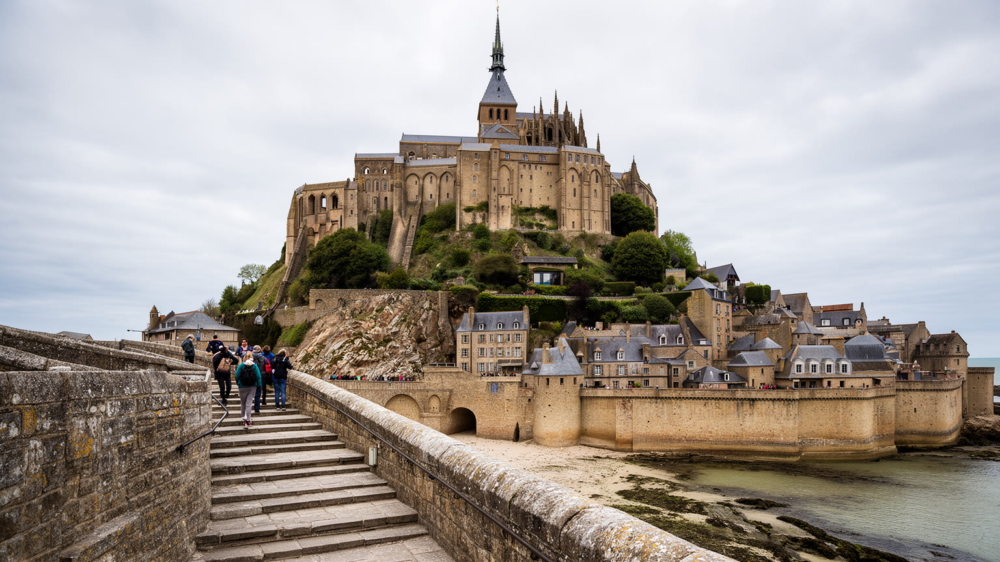
修道院は、モン・サン＝ミシェルの視覚的な頂点であると同時に、宗教、建築、軍事、国家管理が重なった複合体です。岩山の斜面に沿って礼拝堂、回廊、食堂、作業空間、防御施設が積み上がり、下から見上げる姿は信仰の階梯そのものに見えます。大天使ミカエルへの奉献は、中世の巡礼ネットワークの中でこの岩山を聖地にし、修道士の祈りと写本、領地経営、来訪者の受け入れを支えました。百年戦争の時代には防御性が強まり、近世には監獄として使われた時期もあるため、石壁は祈りだけでなく拘束と国家権力の記憶も背負います。現在、修道院は文化財として公開され、宗教的沈黙と観光の足音が同じ回廊に響きます。建築の美しさを味わうだけでは、この場所の厚みは見えません。石を運んだ労働、階段を上る身体、ミサの時間、革命後の荒廃、修復の技術、入場管理、警備と保存の費用までが、修道院を現在の都市機能にしています。頂上の聖堂から湾を見下ろすと、信仰がなぜこの危うい地形を選んだのかが少しわかります。空に近い岩山は、同時に潮と戦う地上の施設でもあります。修道院の力は、天上への象徴性と、石造りを維持する日々の実務のあいだにあります。見学順路、照明、柵、案内文は目立たないが、祈りの場を観光施設として開くための慎重な翻訳です。静けさを損なわずに大勢を通す技術が、文化財の現在形を支えています。
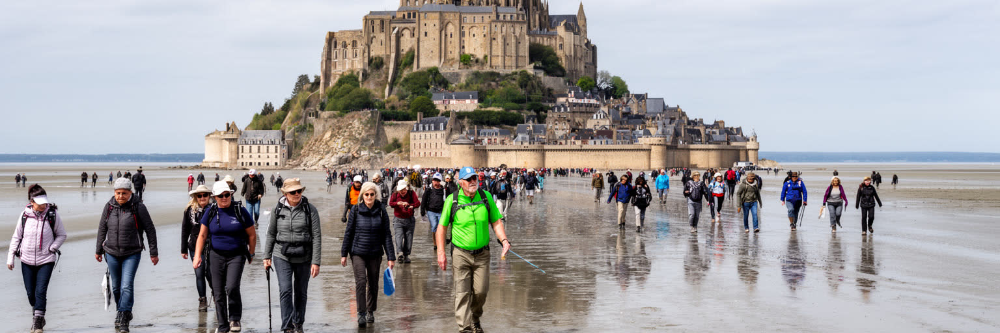
モン・サン＝ミシェルの巡礼は、目的地だけでなく道の経験によって形作られてきました。ヨーロッパ各地の巡礼地と同じように、ここでも歩くこと、危険を越えること、祈ること、宿を得ること、食を分け合うことが信仰の一部でした。干潟を渡る道は、潮の読み違いが命に関わるため、単なる交通路ではありません。案内人、地元の知識、集団の規律、天候判断が、聖地への接近を可能にしました。現代の来訪者の多くは宗教的な巡礼者ではなく観光客ですが、岩山へ向かう長いアプローチには今も儀礼的な感覚が残ります。遠くに見える尖塔が少しずつ大きくなり、橋を渡り、門をくぐり、石段を上がる動きは、都市の中心へ入るだけでなく、日常から離れる身体の変化を作ります。巡礼の記憶は、土産物や写真に吸収されるだけではありません。ミサ、沈黙、聖歌、巡礼証明、湾を歩く団体、地域の受け入れ体制として続いています。聖地の価値は、巨大な来訪者数だけでは測れません。祈りの時間を守りながら観光を受け入れ、危険な自然を尊重しながら道を開くことが、この場所の倫理です。モン・サン＝ミシェルでは、巡礼路が海と陸、過去と現在、信仰と観光をつなぐ細い制度になっています。靴の泥、沈黙の列、鐘の合図、到着後の食事は、信仰を身体の記憶へ変えます。歩く速度を残すことが、聖地を単なる観光消費から守る手がかりになる場です。
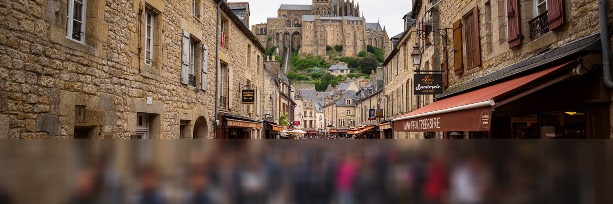
モン・サン＝ミシェルは、人口わずかな自治体でありながら、世界的な観光地として膨大な来訪者を受け入れます。日帰り客、巡礼者、学校旅行、団体ツアー、写真目的の旅行者、宿泊客が、限られた門、参道、階段、展望場所に集中します。混雑は単に歩きにくいという問題ではありません。救急動線、ごみ処理、トイレ、飲食店の待ち時間、文化財の摩耗、住民の静けさ、働く人の疲労、価格の上昇、来訪者の体験の質に関わります。観光収入は地域の雇用を支えますが、短時間消費に偏ると、宿泊や周辺集落、農業、湾の理解へ利益が広がりにくいです。観光の成功が観光地そのものを傷める危険があるため、入場管理、時間帯分散、交通予約、湾歩きの安全教育、文化財解説、地元産品の扱いが重要になります。参道のにぎわいは楽しい一方、同じ通りで搬入、清掃、祈り、郵便、住民の帰宅も行われます。モン・サン＝ミシェルを読むには、名所の魅力と混雑管理を切り離さないことが必要です。世界遺産は人を呼ぶ称号であると同時に、訪問の仕方を学ばせる責任でもあります。観光客が一枚の写真で帰る場所を、地域は毎日管理し、修復し、働き、住み続けます。小さな村の容量を超える注目を、どう質の高い滞在へ変えるかが焦点です。滞在時間を少し伸ばし、湾の解説や周辺の町へ足を向ける流れを作れれば、混雑は単なる負担から地域を知る入口へ変わります。量より理解を重視する設計が必要です。
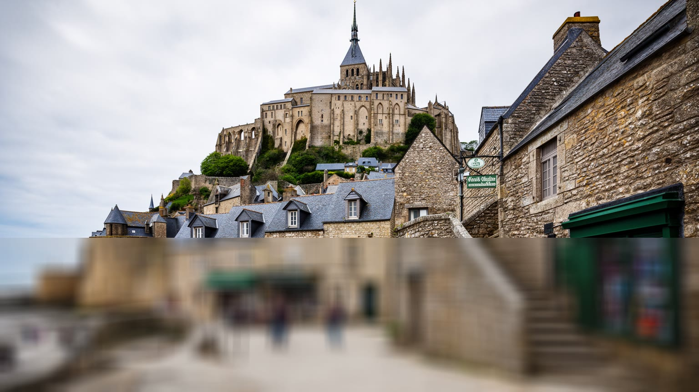
モン・サン＝ミシェルは観光客の視線では巨大な記念物に見えますが、行政上は実際に住民を持つ小さなコミューンです。人口はごく少なく、岩山の内部で暮らす人、宗教共同体、店舗や宿泊施設で働く人、周辺から通う労働者が、来訪者の多さとは対照的な生活単位を作ります。住民の日常は、石畳の美しさだけでなく、搬入車両の時間、食品や洗濯物の移動、ごみ処理、修繕、消防、救急、郵便、夜間の静けさ、観光客の視線に囲まれる感覚によって決まります。観光地の中心に住むことは、歴史的な場所を守る誇りである一方、プライバシーと生活の自由を制限します。家の窓や路地が撮影対象になり、買い物や移動も混雑のリズムに合わせなければなりません。さらに、若い世帯が住み続けられる住宅や学校、医療、通勤条件は限られます。だからこの村を理解するには、修道院の入場者数だけでなく、住民票を持つ人の少なさ、働く人の通勤、夜に残る人の数を見る必要があります。世界的な象徴は、誰かの生活場所でもあります。石の家並みが舞台装置になりすぎれば、村は美しくても空洞化します。モン・サン＝ミシェルの持続性は、観光の演出ではなく、少数の住民と働き手が無理なく日常を続けられるかにかかっています。朝の開店前、最終シャトル後、冬の平日には、別の時間の村が現れます。その静かな時間を守れるかが、記念物ではなく共同体としての価値を左右します。
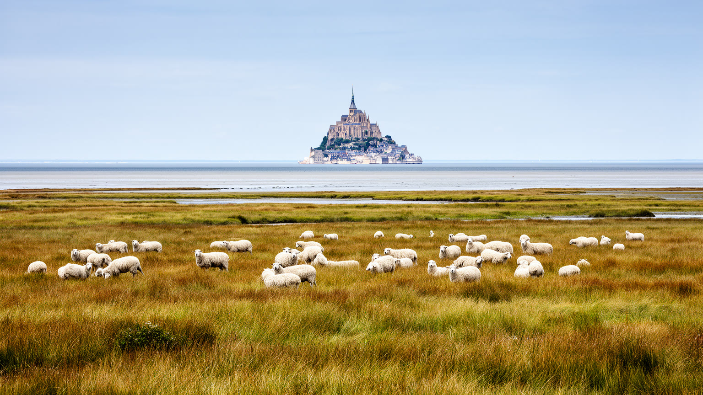
モン・サン＝ミシェル湾の価値は、岩山のシルエットだけで完結しません。周辺には塩性湿地、干潟、草地、水路、農地が広がり、潮を受ける草を食べて育つプレ・サレ羊のように、地形と食文化が結びついてきました。塩気を含む草地は、普通の牧草地とは異なる風味と景観を生み、地域の料理や観光イメージにも関わります。ですが、この牧歌的な風景は自然のまま放置されたものではありません。堤防、水路管理、放牧のルール、農家の経営、鳥類や植物の保全、観光客の立ち入り、気候変動による高潮リスクが絡む管理空間です。湾の生態系は、砂や泥の移動、淡水と海水の混じり方、農地からの排水、海鳥の生息、貝類や小さな生物の連鎖によって成り立ちます。旅行者は修道院へ急ぎがちですが、遠景の草地と羊を見ることで、この世界遺産が文化景観であることがわかります。地域の食を支える農牧は、観光の脇役ではなく、湾を生活の場として使い続ける知恵です。過度な観光や環境変化が草地を乱せば、食文化も景観も弱ります。モン・サン＝ミシェルを守るとは、尖塔だけでなく、低い草、潮の通る水路、農家の仕事、食卓までを一つの風景として考えることでもあります。静かな湿地は、名所の足元を支える地域経済の土台です。羊の放牧は絵になる風景であると同時に、土地を使い続ける契約でもあります。観光客が食べる一皿は、湾の草、潮、農家の判断を通って届きます。
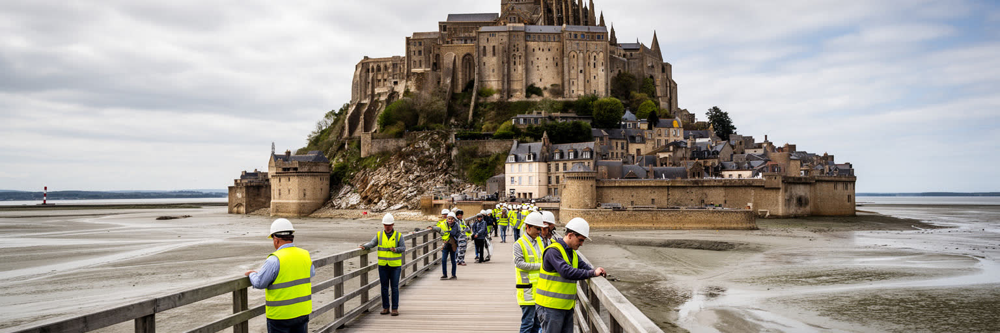
モン・サン＝ミシェルの近代史で重要なのは、景観をただ保存するのではなく、失われかけた海との関係を取り戻そうとしたことです。かつての道路や駐車場、堤防的な構造はアクセスを容易にした一方、潮流を弱め、砂や泥の堆積を進め、岩山を陸続きに近づけていました。修道院が海に浮かぶように見える性格は、写真の問題ではなく、世界遺産の根本的な価値に関わります。復元事業では、駐車場を遠ざけ、橋で接続し、クエノン川の堰を活用して水の流れを調整し、堆砂を抑える仕組みが整えられました。これは自然へ単純に戻す事業ではありません。観光アクセス、住民と働き手の移動、バス運行、洪水管理、生態系、景観、費用負担を同時に調整する高度な都市計画です。来訪者には橋の上からの眺めが印象的ですが、その裏では長期の水理調査、模型実験、行政間の合意、工事後のモニタリングが続いています。景観復元は、過去の姿を懐かしむだけでは成立しません。気候変動と観光需要が変わる中で、海、川、道路、人の流れをどう組み替えるかが問われます。モン・サン＝ミシェルは、文化財保護が建物の修理だけでなく、周辺環境と交通の設計まで含むことを示す場所です。橋を渡る体験は、復元された景観を使う新しい都市作法でもあります。かつて近くまで車で行けた便利さを手放すことには抵抗もありましたが、距離を歩くことで岩山の孤立感は強まりました。アクセスの不便さを少し戻す判断が、遺産の価値を回復させました。
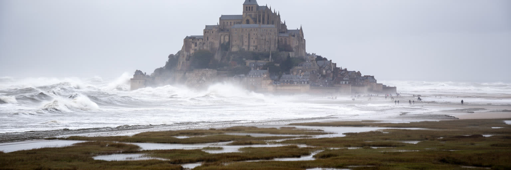
モン・サン＝ミシェルの美しさは、沿岸リスクと切り離せません。潮位、強風、霧、流砂、急な天候変化、高潮、浸水、海面上昇、観光客の迷い込みは、日常的な安全管理の対象です。干潟は広く平らに見えますが、足元の硬さや水路の位置は変わり、案内なしの湾歩きは危険を伴います。気候変動は、海岸線の管理をさらに難しくします。平均海面の上昇、暴風雨の頻度、河川流量の変化、堆砂や浸食のバランスが変われば、橋、駐車場、アクセス道路、草地、修道院の基礎、地下設備への影響も考えなければなりません。世界遺産であることは、守るべき価値を明確にする一方、対応を遅らせる理由にはなりません。景観を損なわずに防災機能を高めることは簡単ではなく、標識、避難情報、潮位情報、ガイド制度、救助体制、保険、観光事業者の訓練が必要になります。旅行者が見る霧の幻想性は、管理者にとって視界不良というリスクでもあります。モン・サン＝ミシェルを読むには、絵になる危うさと、そこで働く人の安全手順を同時に見る必要があります。沿岸都市の課題は大都市だけのものではありません。小さな岩山の村も、気候変動の時代にはインフラ、文化財、観光、住民生活を一体で守る沿岸管理の最前線に立っています。危険を消すのではなく、変わる海を読み続ける仕組みを保つことが重要です。潮位情報を確認する習慣は、観光マナーであると同時に沿岸社会への参加でもあります。
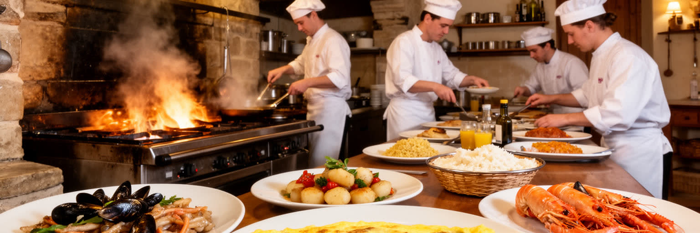
モン・サン＝ミシェルの食と宿泊は、観光の付属物ではなく、巡礼地としての歴史を現在につなぐインフラです。かつて聖地へ向かう人には、休む場所、温かい食事、馬や荷物を扱う場所が必要でした。現代でも、宿、食堂、カフェ、土産物店、ガイド、シャトル、周辺ホテルは、短い滞在を支えます。名物として知られるふわりとしたオムレツは、観光記号になりやすいものの、料理の背景には門前町で客を迎える技術、回転率、価格設定、地域食材、労働時間、厨房の搬入という現実があります。湾の羊肉、海産物、乳製品、リンゴ酒、ノルマンディーの菓子は、岩山だけでなく周辺農村と海の経済を伝えます。観光地の飲食は、期待が高い一方で混雑や高価格への不満も生みやすいです。だから滞在の質を上げるには、名物を売るだけでなく、来訪者を周辺地域へ分散させ、地元産品の価値を説明し、働く人の条件を整えることが必要です。宿泊すれば、日帰り客が去った後の静けさ、朝の潮、夜の石畳が見えます。食と宿は消費の場であると同時に、聖地を一日の写真から生活時間へ引き戻す装置です。モン・サン＝ミシェルの hospitality は、観光客を早く通過させる力ではなく、湾の時間に少し滞在させる力として評価されるべきです。朝食の準備、客室清掃、夜の戸締まり、潮を見ながらの仕入れは、来訪者には見えにくい労働です。そうした仕事が整って初めて、名所は滞在できる場所になります。
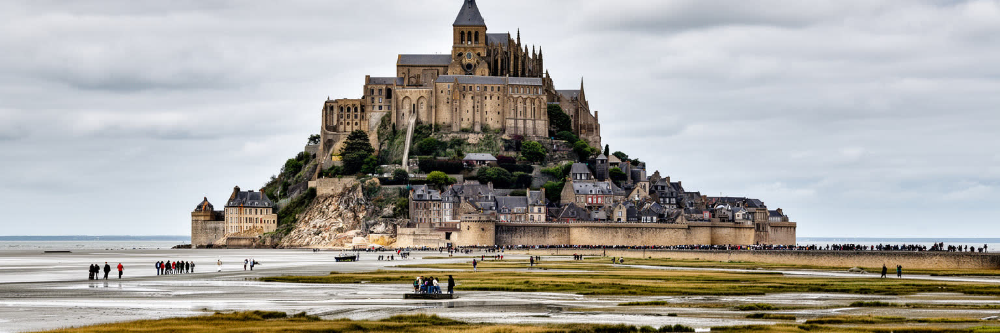
モン・サン＝ミシェルを読むことは、都市の大きさだけで重要性を測る習慣をいったん外すことです。ここには巨大な人口も高層ビルもありませんが、潮汐の地形、信仰、戦争記憶、観光経済、文化財保護、沿岸環境、住民生活、気候リスクが、驚くほど狭い場所に凝縮しています。岩山の修道院は世界的な象徴であり、同時に修復費、入場管理、宗教儀礼、石材の保全、働く人の通勤を必要とする実務の塊でもあります。参道は観光客の写真の舞台であり、住民と店舗の生活路であり、搬入と清掃の現場でもあります。湾は幻想的な景観であり、堆砂、高潮、救助、生態系、農牧の管理空間でもあります。だからこの場所を都市アトラスに置く意味は、規模ではなく関係の密度にあります。小さな自治体が世界的な来訪者を受け入れる時、誰が費用を負担し、誰が利益を得て、誰の静けさが失われ、どの環境が守られるのかが見えてきます。モン・サン＝ミシェルは、文化遺産が過去の保存だけでなく、未来の交通、観光、気候適応を設計する課題であることを教えます。潮が満ちるたびに境界が変わるこの岩山は、都市とは何かを問い直します。都市は人口の量だけではなく、人、記憶、自然、制度が集まり、互いに制約しながら続く場所でもあります。だから歩く順路、潮位表、橋の距離、食堂の価格、祈りの沈黙までが都市の読解対象になります。小ささは重要性の不足ではなく、関係を細部まで見せる拡大鏡です。